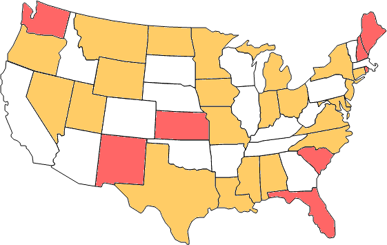
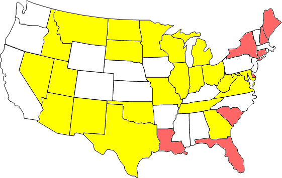
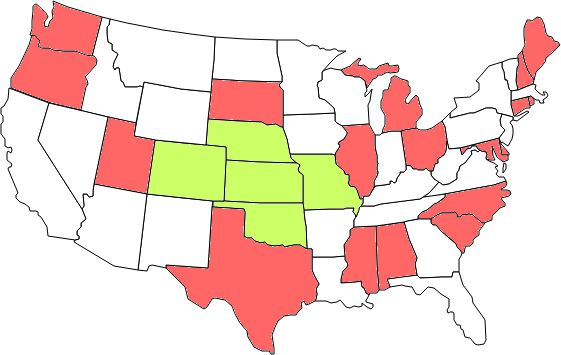

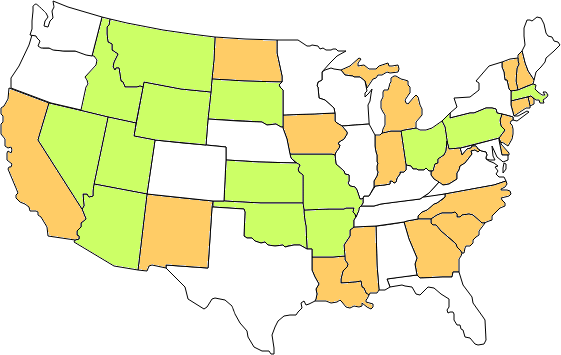
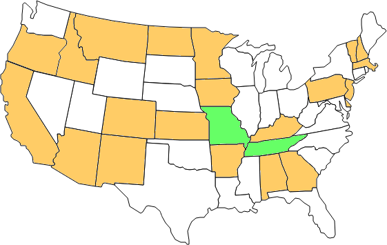
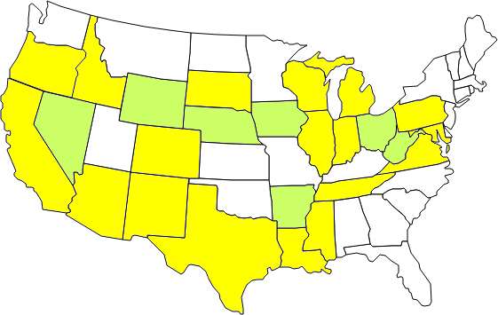
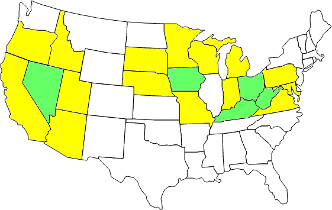
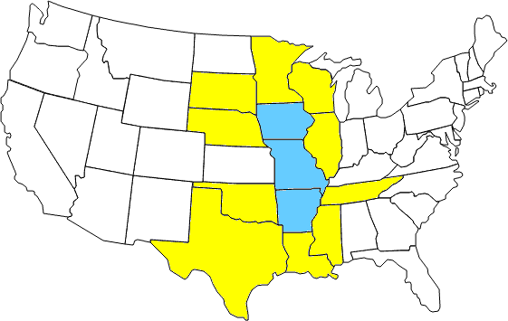
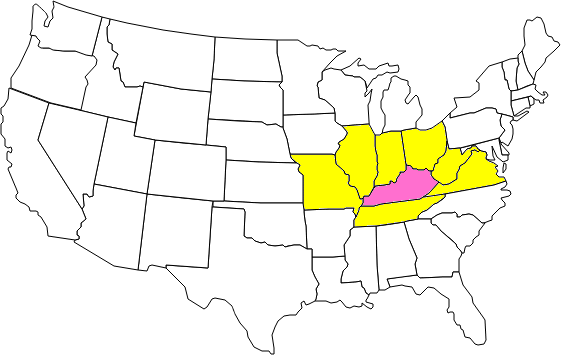
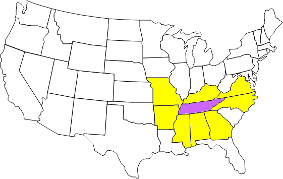
| {1}: 24 states 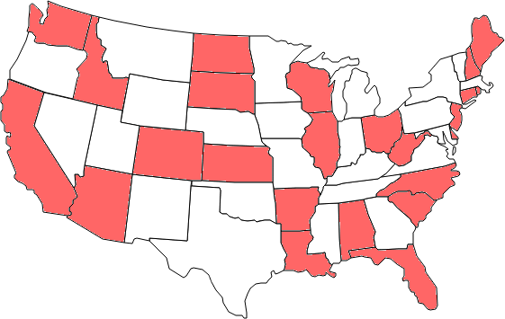 | {2}: 27 states (George Sicherman) 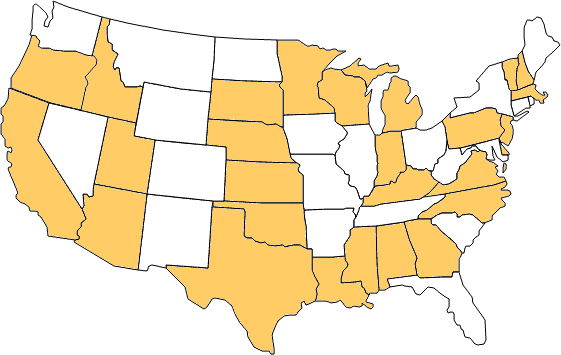 |
| {3}: none | {4}: none |
| {5}: none | {6}: none |
| {7}: none | {8}: none |
| {1,2}: 31 states (George Sicherman) 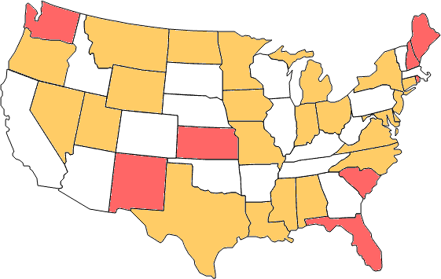 | {1,3}: 30 states (George Sicherman) 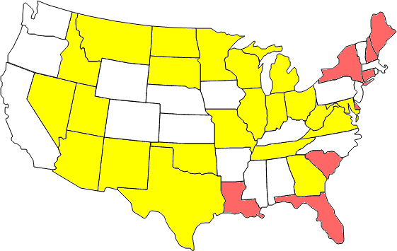 |
| {1,4}: 23 states 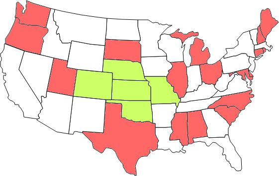 | {1,5}: none (Bryce Herdt) |
| {1,6}: none | {1,7}: none |
| {1,8}: none | {2,3}: 34 states (Bryce Herdt)
|
| {2,4}: 32 states (Rob Pratt) 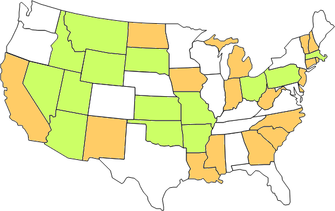 | {2,5}: 23 states 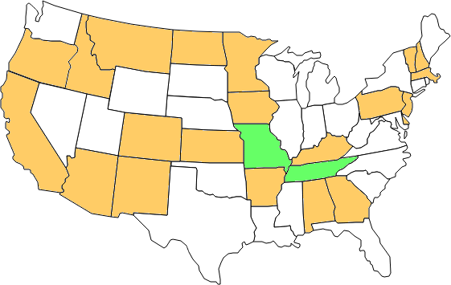 |
| {2,6}: none | {2,7}: none |
| {2,8}: none | {3,4}: 25 states (George Sicherman) 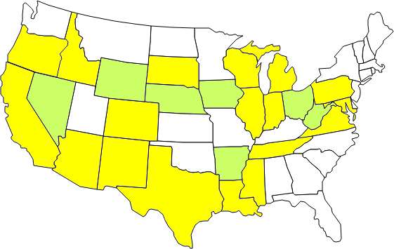 |
| {3,5}: 20 states (George Sicherman) 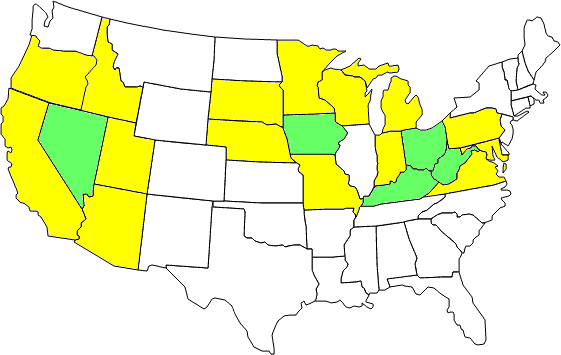 | {3,6}: 13 states (George Sicherman) 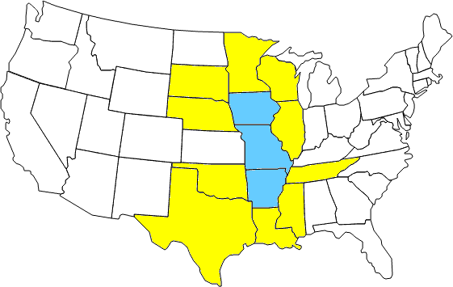 |
| {3,7}: 8 states 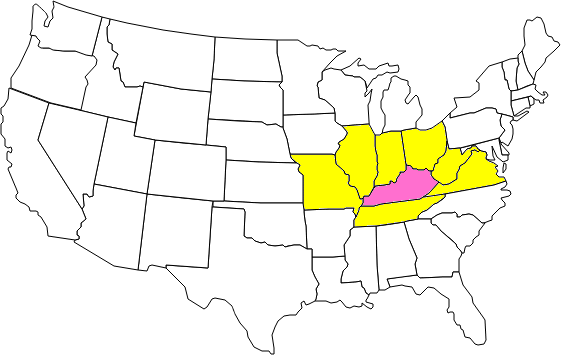 | {3,8}: 9 states 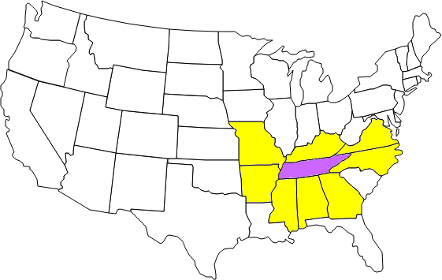 |
| {4,5}: none (Bryce Herdt) | {4,6}: none (Bryce Herdt) |
| {4,7}: none (Bryce Herdt) | {4,8}: none (Bryce Herdt) |
| {5,6}: none (Bryce Herdt) | {5,7}: none (Bryce Herdt) |
| {5,8}: none | {6,7}: none |
| {6,8}: none | {7,8}: none |
| {1,2,3}: 36 states 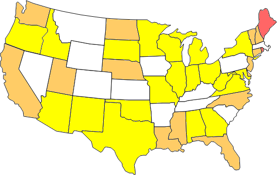 | {1,2,4}: 35 states (Rob Pratt) 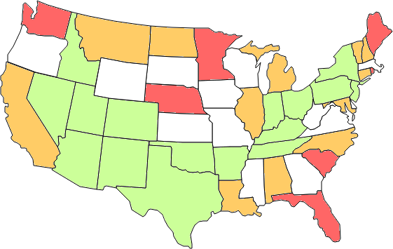 |
| {1,2,5}: 29 states (Bryce Herdt) 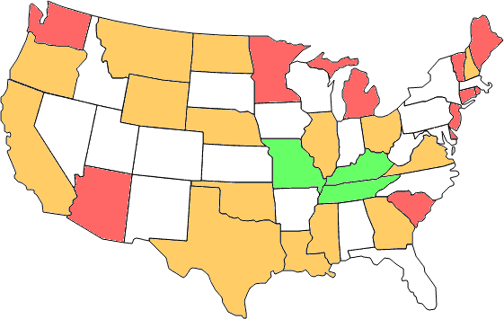 | {1,2,6}: none |
| {1,2,7}: none | {1,2,8}: none |
| {1,3,4}: 36 states (Bryce Herdt) 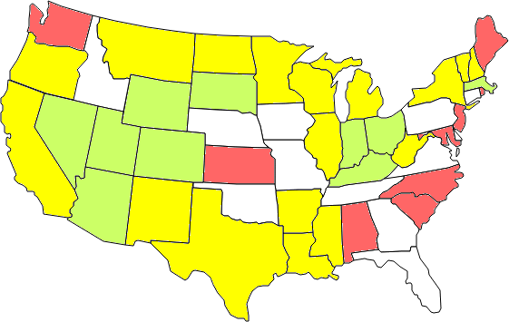 | {1,3,5}: 34 states (Rob Pratt) 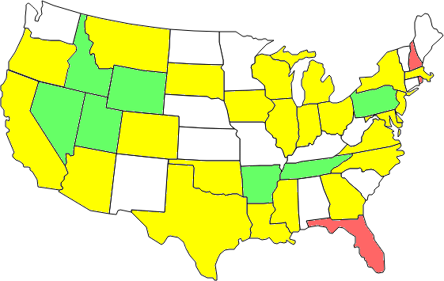 |
| {1,3,6}: 31 states (Bryce Herdt) 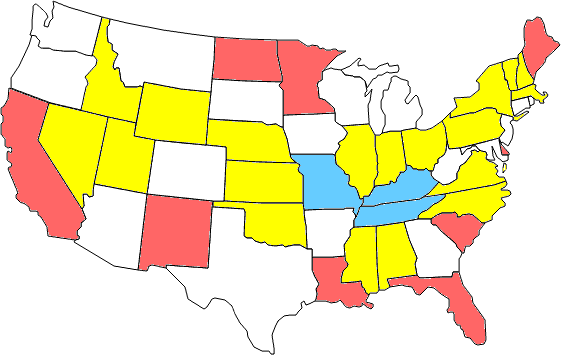 | {1,3,7}: 28 states 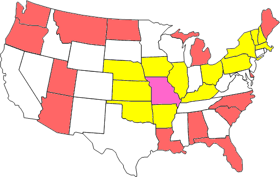 |
| {1,3,8}: 25 states 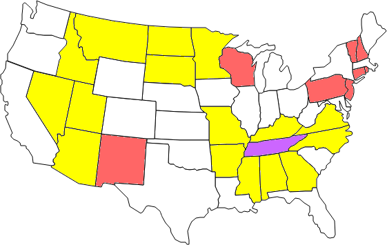 | {1,4,5}: 23 states (Rob Pratt) 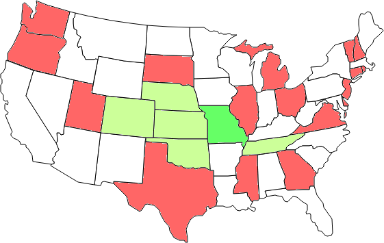 |
| {1,4,6}: 26 states (George Sicherman) 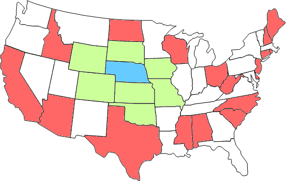 | {1,4,7}: none (Rob Pratt) |
| {1,4,8}: none | {1,5,6}: none (Rob Pratt) |
| {1,5,7}: none (Rob Pratt) | {1,5,8}: none |
| {1,6,7}: none (Rob Pratt) | {1,6,8}: none |
| {1,7,8}: none (George Sicherman) | {2,3,4}: 39 states (Bryce Herdt) 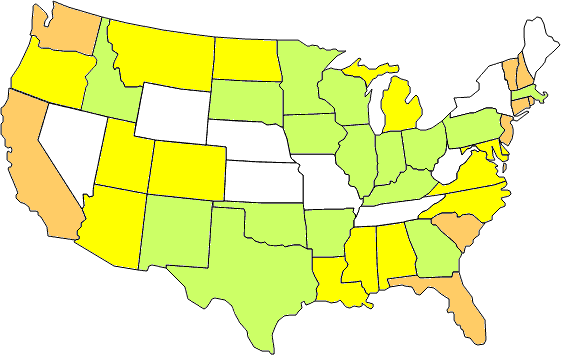 |
| {2,3,5}: 37 states (Rob Pratt) 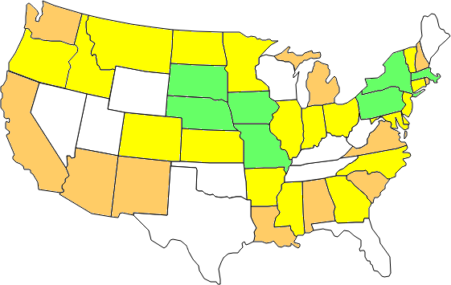 | {2,3,6}: 33 states (Rob Pratt) 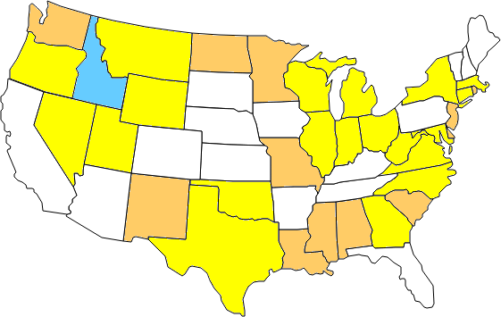 |
| {2,3,7}: 31 states (Bryce Herdt) 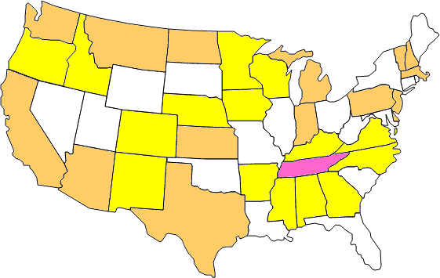 | {2,3,8}: 26 states (Bryce Herdt) 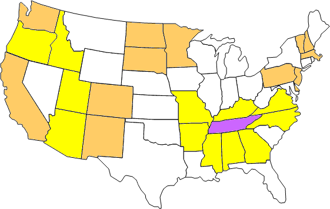 |
| {2,4,5}: 36 states (Bryce Herdt) 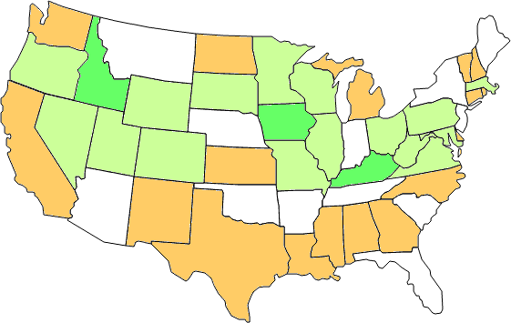 | {2,4,6}: 35 states (George Sicherman) 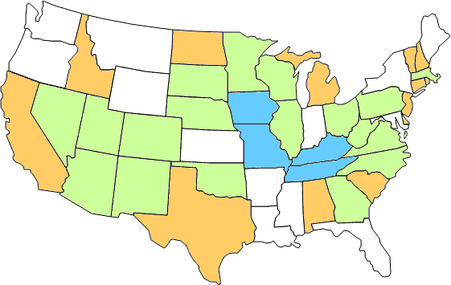 |
| {2,4,7}: 31 states (Rob Pratt) 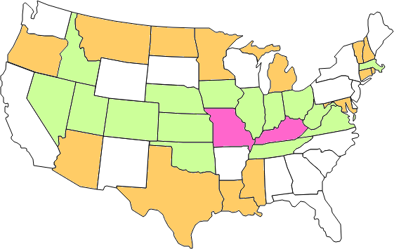 | {2,4,8}: 28 states (George Sicherman) 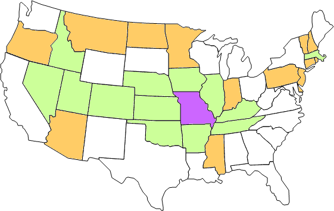 |
| {2,5,6}: 23 states (Bryce Herdt) 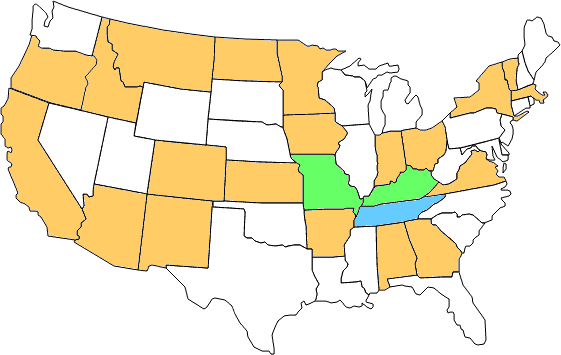 | {2,5,7}: none (Rob Pratt) |
| {2,5,8}: none | {2,6,7}: none (Rob Pratt) |
| {2,6,8}: none | {2,7,8}: none (George Sicherman) |
| {3,4,5}: 30 states (Bryce Herdt) 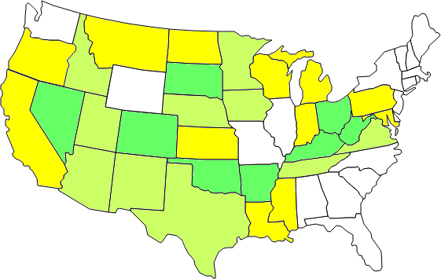 | {3,4,6}: 29 states (George Sicherman) 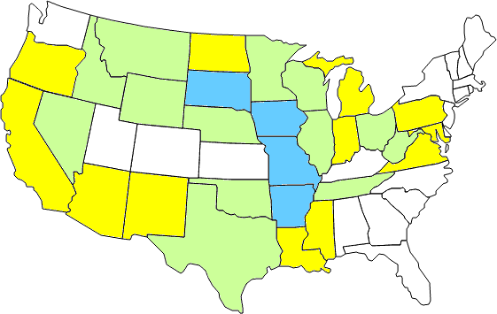 |
| {3,4,7}: 29 states (Rob Pratt) 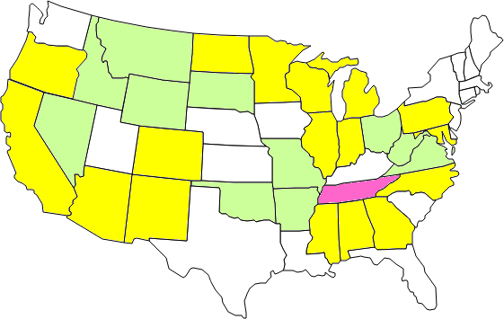 | {3,4,8}: 15 states (George Sicherman) 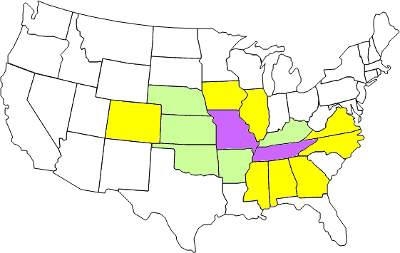 |
| {3,5,6}: 23 states (Rob Pratt) 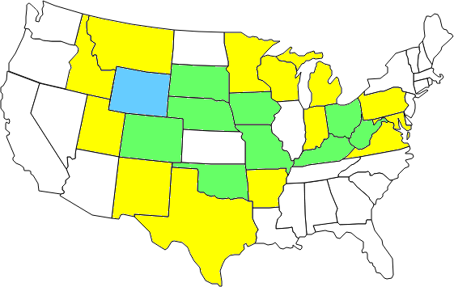 | {3,5,7}: 14 states (George Sicherman) 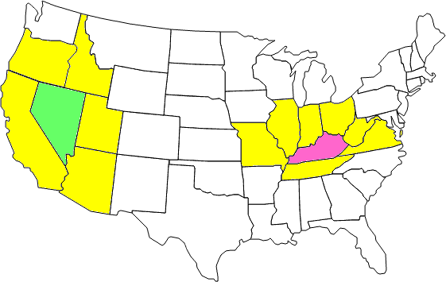 |
| {3,5,8}: 23 states (George Sicherman) 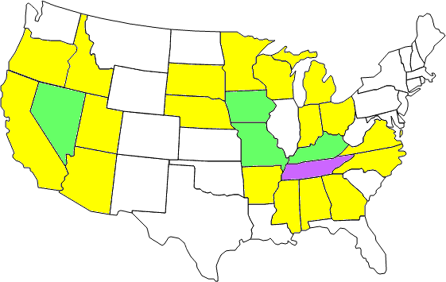 | {3,6,7}: none (Rob Pratt) |
| {3,6,8}: 15 states (George Sicherman) 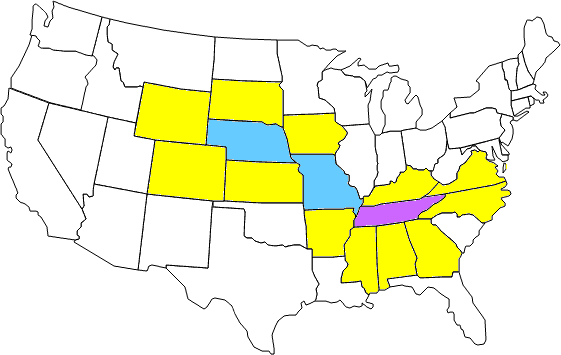 | {3,7,8}: none (Bryce Herdt) |
| {4,5,6}: none (Bryce Herdt) | {4,5,7}: none (Bryce Herdt) |
| {4,5,8}: none (Bryce Herdt) | {4,6,7}: none (Bryce Herdt) |
| {4,6,8}: none (Bryce Herdt) | {4,7,8}: none (Bryce Herdt) |
| {5,6,7}: none (Bryce Herdt) | {5,6,8}: none (Bryce Herdt) |
| {5,7,8}: none (Bryce Herdt) | {6,7,8}: none (Bryce Herdt) |
The adjacency sets of the 13 countries of South America, the 16 states of Germany, the the 21 counties of New Jersey, and the the 23 counties of Wyoming can be analyzed completely due to the relatively small number of regions.
If you can extend any of these results, please e-mail me. Click here to go back to Math Magic. Last updated 8/27/17.